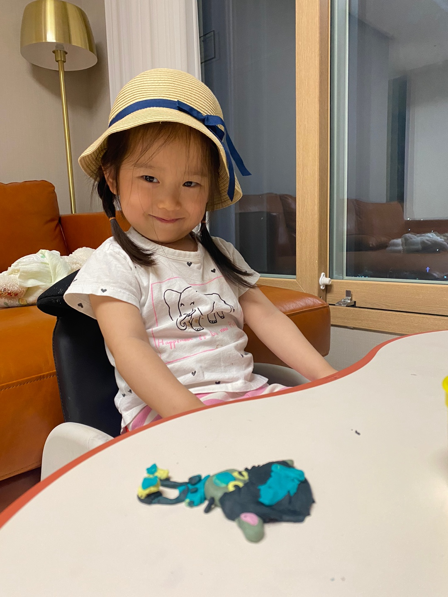

1981 올해는 한국문학의 모더니스트이자 대표적인 참여시인으로 꼽히는 김수영 시인(1921~1968)의 서거 50주년 ** 관련 기록 : item1 Share × Link Facebook Twitter
1981  올해는 한국문학의 모더니스트이자 대표적인 참여시인으로 꼽히는 김수영 시인(1921~1968)의 서거 50주년을 맞는 해다. 그가 우리 곁을 떠난 지 어느 덧 반세기가 지났지만 그 누구보다 온몸으로 ‘자유’를 갈망했던 그의 시는 오늘날 보다 푸르른 젊음으로 우리의 마음을 흔들고 있다. 1921년 서울 종로에서 태어난 김수영 시인의 삶은 그가 살아온 시대만큼이나 파란만장했다. ** 관련 기록 : item1 Share × Link Facebook Twitter